Study notes: Module 4, transient circuits and alternating currents
12.1 Growth of current in a circuit with resistance and inductance
Before you start
- Ohm’s law and the emf of a cell (Plus Two; pre-physics P1).
- Separating variables and integrating a first-order equation (Beyond; pre-math M4). Learn the steps here before the derivation.
- Exponentials and logarithms (pre-math M3).
1. The circuit
Take an inductance $L$ and a resistance $R$ in series with a cell of steady emf $E$. A key $K$ closes the circuit (Fig. 12.1). When the key is pressed, the current does not jump to its final value. It grows from zero to a maximum $I_0$. Let $I$ be the current at time $t$.

2. The loop equation
The inductor opposes the change of current with the back emf $\varepsilon=-L\,dI/dt$. Going round the loop, the cell emf is balanced by the drop across $R$ and by the back emf of $L$:
3. The steady current
When the current reaches its maximum $I_0$, it no longer changes, so $dI/dt=0$ and the back emf is zero. Eq. (1) gives
4. Separating the variables
Substitute $E=RI_0$ into Eq. (1). Then $RI_0 = RI + L\,dI/dt$, so
The left side contains only $I$ and the right side only $t$. The two can be integrated separately.
5. Integrating and fixing the constant
Integrating both sides,
where $C$ is the constant of integration. At $t=0$, $I=0$, so $-\log I_0 = C$. Put this back into Eq. (3):
6. The result
Eq. (4) is the current in the L-R circuit at any instant. It starts at zero and tends to $I_0$ as $t$ becomes large.
7. The time constant
The quantity $L/R$ is the time constant $\tau$ of the circuit. Put $t=\tau=L/R$ in Eq. (4):
So the time constant is the time the current takes to grow to 0.632 of its final value. A larger $L/R$ means a slower growth. At $t=2\tau$ the current is $0.865\,I_0$; at $3\tau$ it is $0.950\,I_0$. Fig. 12.2 shows this for three values of $L/R$.

8. Worked example (printed p. 314)
An emf of 10 V is applied to a circuit with $R=10\ \Omega$ and $L=0.5$ H. The time to reach 63.2% of the final value is found from Eq. (4). Here $R/L=20\ \text{s}^{-1}$, so $e^{-20t}=0.368$ and $t=\frac{\ln 2.717}{20}=0.05$ s. The time constant is $L/R=0.05$ s, which is the same value. This is no accident: 63.2% is reached at $t=\tau$ by definition.
12.2 Decay of current in a circuit with inductance and resistance
Before you start
- §12.1 of these notes: the loop equation and the time constant $L/R$.
- Exponentials and logarithms (pre-math M3).
1. What changes when the cell is removed
Once the current has reached $I_0$, the circuit is broken from the cell and closed on itself. The emf of the cell is now zero, so $E=0$. The inductor still drives a current, because its back emf $-L\,dI/dt$ opposes the fall of current. The back emf keeps the current from dropping at once.
2. Loop equation with E = 0
Rearranging, $dI/I = -(R/L)\,dt$. The variables are separated again.
3. Integration
Integrate, with $\log_e I = -(R/L)t + C$. At $t=0$, $I=I_0$, so $C=\log_e I_0$. Then
4. Reading Eq. (2)
The current falls exponentially. The time constant $\tau=L/R$ is now the time for the current to fall to $1/e\approx0.368$ of its initial value. The rate of decay is
The larger the ratio $R/L$, the more rapidly the current dies away (Fig. 12.4). The decay and growth curves are complementary (Fig. 12.5). The decay curve is the growth curve turned upside down.


5. Worked example (printed p. 315)
An inductance of 500 mH and a resistance of 5 $\Omega$ are connected to a 10 V emf. The final current is $I_0=E/R=2$ A. When the cell is removed and the terminals are joined, $R/L=10\ \text{s}^{-1}$ and $I=2e^{-10t}$. After 0.05 s, $I=1.213$ A. After 0.2 s, $I=0.271$ A.
12.3 Growth and decay of charge in a circuit with resistance and capacitance
Before you start
- Capacitance and charge, $Q=CV$ (Plus Two; pre-physics P3).
- Ohm’s law (pre-physics P1) and the first-order equation solved in §12.1 of these notes.
1. Growth of charge (charging)
A capacitor $C$ and a resistance $R$ are joined to a cell of emf $E$ through a Morse key $K$ (Fig. 12.6). When the key is pressed, a momentary current $I$ flows through $R$. Let $Q$ be the charge on the capacitor at time $t$. The p.d. across the capacitor is $Q/C$ and the p.d. across the resistor is $RI$.

The emf equation of the circuit is
Since $I=dQ/dt$, this is $E = Q/C + R\,dQ/dt$.
2. The final charge
The charge grows until it reaches its maximum $Q_0$. At that instant $I=dQ/dt=0$ and the p.d. across the capacitor equals the emf: $E=Q_0/C$.
3. Separating the variables
Substitute $E=Q_0/C$ into the equation, so $Q_0/C = Q/C + R\,dQ/dt$. Multiply by $C$:
4. Integration and boundary condition
Integrating gives $-\log_e(Q_0-Q) = t/CR + K$. At $t=0$, $Q=0$, so $K=-\log_e Q_0$. Then $\log_e\frac{Q_0-Q}{Q_0} = -\frac{t}{CR}$, which gives
5. Time constant
The time constant is $\tau = CR$. At $t=CR$, $Q = Q_0(1-e^{-1}) = 0.632\,Q_0$. The time constant is therefore the time for the charge to reach 0.632 of its maximum. The rate of growth is $dQ/dt = (Q_0/CR)e^{-t/CR}$. A smaller product $CR$ gives faster charging. The rate of charging is greatest at the start and falls as $Q$ approaches $Q_0$ (Fig. 12.7).
6. Decay of charge (discharging)
Now release the Morse key so that the capacitor, charged to $Q_0$, discharges through $R$. The charge flows out and forms a current. Here $E=0$, so
Separating the variables and integrating with $Q=Q_0$ at $t=0$ gives
The charge decays exponentially and becomes zero only after an infinite time. The rate of discharge is
In Eq. (b)(2), at $t=CR$, $Q = Q_0e^{-1} = 0.368\,Q_0$. So the time constant is also the time for the charge to fall to $1/e$ of its maximum. Growth and decay are shown together in Fig. 12.7.

7. Worked example 1 (printed p. 316)
A capacitor is charged through a resistance of $2\ \text{M}\Omega$. It takes 0.5 s to reach three quarters of its final charge. From Eq. (a)(3), $\tfrac34 = 1 - e^{-0.5/CR}$, so $e^{0.5/CR} = 4$ and $C = 0.5/(2\times10^6\ln 4) = 0.18\ \mu\text{F}$.
8. Worked example 2 (printed p. 317)
A capacitor of $0.1\ \mu\text{F}$ is discharged through $10\ \text{M}\Omega$. The time for the p.d. to fall to half its value is $t = CR\ln 2 = 0.6931$ s, since $Q/Q_0 = V/V_0$ for the same capacitor.
12.4 Measurement of high resistance by leakage (background)
1. Principle
A capacitor of capacitance $C$ and initial charge $Q_0$ is allowed to discharge through a high resistance $R$ for a time $t$. From §12.3, the charge that remains is $Q = Q_0e^{-t/CR}$. Therefore
If $R$ is high, $CR$ is large and the discharge is very slow. Measuring $Q_0/Q$ then gives $R$.
2. Circuit and procedure
$C$ is a capacitor of known value, $R$ is the high resistance, B.G. is a ballistic galvanometer, $E$ is a cell and $K_1$, $K_2$, $K_3$ are tap keys (Fig. 12.8).

(i) With $K_2$ and $K_3$ open, charge $C$ fully through $K_1$. Open $K_1$ and close $K_3$. The capacitor discharges through the galvanometer, which gives a throw $\theta_0$, proportional to $Q_0$.
(ii) Charge $C$ again, open $K_1$, and close $K_2$ for a known time $t$. Some charge leaks through $R$. Open $K_2$ and close $K_3$. The remaining charge $Q$ gives a throw $\theta$, proportional to $Q$.
Since $Q_0/Q = \theta_0/\theta$,
3. Graph
A plot of $\log_{10}(\theta_0/\theta)$ against $t$ is a straight line through the origin (Fig. 12.9). Its slope gives $\frac{t}{\log_{10}(\theta_0/\theta)}$, and with $C$ known, $R$ follows.

4. Worked examples (printed pp. 318–319)
(1) For $C=2\ \mu$F, $R=100\ \text{M}\Omega$ and $Q_0/Q=2$, the leakage time is $t=2.3026\,CR\log_{10}2=138.7$ s. (2) For $C=0.2\ \mu$F, a kick of 12 cm and then 6 cm after 2 s gives $R=14.43\ \text{M}\Omega$.
12.5 Charging and discharging of a capacitor through an inductance
Before you start
- The charge and the p.d. of a capacitor (pre-physics P3); self-inductance and back emf (pre-physics P2).
- Simple harmonic motion: $d^2x/dt^2 + \omega^2x = 0$ (pre-math H2).
1. Charging a capacitor through an inductance
A capacitance $C$ and an inductance $L$ are joined to a cell $E$ through a Morse key (Fig. 12.10). Pressing the key starts a momentary current through $L$ and the capacitor begins to charge. Let $Q$ be the charge on $C$ at time $t$. The emf equation is

Using $I = dQ/dt$, so that $dI/dt = d^2Q/dt^2$, and writing $Q_0 = CE$ for the maximum charge, the equation becomes
This is the equation of undamped simple harmonic motion, with period
The charging is oscillatory. The frequency is
2. Discharging a capacitor through an inductance
The capacitor is charged to $Q_0$ with the inductance out of the circuit. The key is then released so that $C$ discharges through $L$ (Fig. 12.11). No external emf acts during the discharge.

This is undamped simple harmonic motion. Put $1/LC = \omega^2$. The general solution is
with $\omega = 1/\sqrt{LC}$. At $t=0$, $Q=Q_0$, which gives $Q_0 = A\sin\theta$. Taking $\theta=\pi/2$ gives $A=Q_0$, and
So $Q$ decreases sinusoidally: the discharge is oscillatory. The natural frequency is

3. Energy in the oscillation
When $C$ is fully charged, all the energy is stored in the electric field of the capacitor. During discharge, a current flows through the coil for a short time and the energy is stored in the magnetic field of the coil. The energy then passes back and forth between the two fields, which is the basis of the oscillations used in wireless telegraphy.

13.1 EMF induced in a coil rotating in a magnetic field
Before you start
- Magnetic flux $\phi = BA\cos\theta$ and Faraday’s law (pre-physics P4).
- Sinusoidal functions and their integrals (pre-physics P5; pre-math M5, M7).
1. The rotating coil
Take a rectangular coil of $N$ turns, of length $a$ and width $b$, rotating with uniform angular velocity $\omega$ about its axis in a uniform magnetic field $\mathbf B$ (Fig. 13.1). The axis is at right angles to the field. As the coil turns, the flux through it changes, so an emf is induced.
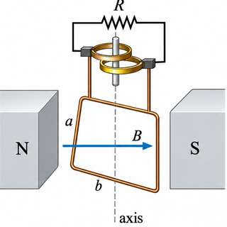
Start timing when the plane of the coil is at right angles to $\mathbf B$, that is when the normal to the coil makes zero angle with $\mathbf B$. At time $t$ the normal makes angle $\theta=\omega t$ with $\mathbf B$. The flux linked with $N$ turns is
2. The induced emf
By Faraday’s law, the instantaneous emf is
where $E_0 = NBA\omega$ is the peak value of the emf. With $\omega = 2\pi\nu$, the emf is a sine curve (Fig. 13.2). A coil in a closed circuit carries an alternating current $I = I_0\sin\omega t$.
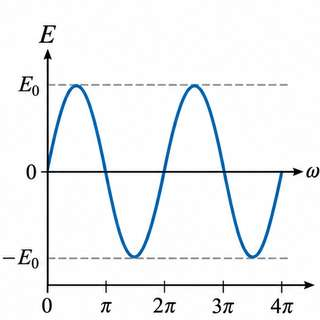
3. One cycle
The time for one cycle is the time period $T = 1/\nu$. The peak value of the current or voltage is the amplitude (Fig. 13.3).
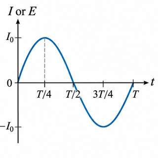
4. Mean value
The mean value is the average over half a cycle:
Similarly $E_{mean} = 0.637\,E_0$. The mean is the area under the half-cycle curve divided by its base (Fig. 13.3 shading).
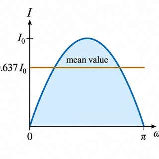
5. Root mean square (r.m.s.) value
The r.m.s. value is the square root of the average of $I^2$ over a complete cycle:
Similarly $E_{rms} = E_0/\sqrt2 = 0.707\,E_0$.
6. Virtual (effective) value
The r.m.s. value is also called the virtual or effective value. It is the direct current that would produce the same heat in the same resistance in the same time. Equating the heat from $I = I_0\sin\omega t$ to $I_v^2RT$ over one period gives $I_v = I_0/\sqrt2$ again.
7. Form factor
The form factor measures the shape of the wave. It is the ratio of the r.m.s. value to the mean value:
8. Mean emf over a half cycle
With $E = E_0\sin\omega t$, integrating over half a period $T/2$ gives $E_{av} = 2E_0/\pi$. The r.m.s. emf is obtained from the mean of $E^2$ over one period, using $\int_0^T\sin^2\omega t\,dt = T/2$, which gives $E_{rms} = E_0/\sqrt 2$.
9. Impedance, reactance and admittance
In an AC circuit the current is controlled by resistance, inductance and capacitance. The impedance $Z$ is the ratio of the applied emf to the current, $Z = E/I$. It is the hindrance the circuit offers to the alternating current. The part of the hindrance due to inductance and capacitance is the reactance. Inductive reactance is $X_L$ and capacitive reactance is $X_C$. The inverse of the impedance is the admittance $Y = 1/Z$.
13.2 Alternating current circuit theory
Before you start
- Phase of a sinusoid; lag and lead (pre-physics H2).
- Complex numbers, $j^2=-1$, and the phasor (Beyond; pre-math B1, B2). Each step with $j$ is explained below.
1. (i) A pure resistance
Let $E = E_0e^{j\omega t}$ be applied across a pure resistance $R$ (Fig. 13.4). The current is
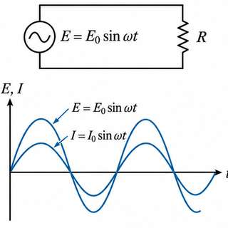
The actual current is the imaginary part of $I_0e^{j\omega t}$, which is $I_0\sin\omega t$. The current is in phase with the voltage (Fig. 13.5).
2. (ii) A pure inductance
Let $E = E_0e^{j\omega t}$ across an inductance $L$ (Fig. 13.6). The voltage across $L$ is $L\,dI/dt$. Integrating $L\,dI/dt = E_0e^{j\omega t}$ gives
With $I_0 = E_0/\omega L$, the actual current is
In a pure inductor the current lags the emf by $\pi/2$ (Fig. 13.7). Here $\omega L$ is the inductive reactance, and $j\omega L$ is the impedance of $L$: the voltage leads the current by $90^\circ$.
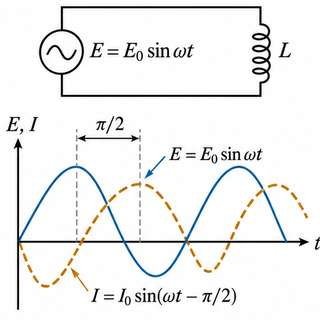
3. (iii) A pure capacitance
Let $E = E_0e^{j\omega t}$ across a capacitor $C$ (Fig. 13.8). With charge $q$, $q/C = E$. The current is $I = dq/dt = j\omega C E$, so
The actual current is $I_0\sin(\omega t + \pi/2)$. In a pure capacitor the current leads the emf by $\pi/2$ (Fig. 13.9). The capacitive reactance is $1/\omega C$, and its impedance is $1/(j\omega C) = -j/(\omega C)$.
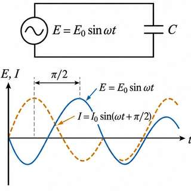
4. (iv) Inductance and resistance in series
Let $E = E_0e^{j\omega t}$ be applied to $L$ and a non-inductive $R$ in series (Fig. 13.10). The impedance is $Z = R + j\omega L$. The potential drops are $j\omega L I$ across $L$ and $RI$ across $R$, so $E = j\omega L I + RI$ and
Write $Z$ in polar form, $Z = \sqrt{R^2+\omega^2L^2}\,e^{j\theta}$ with $\tan\theta = \omega L/R$. Then
$I_0$ is the peak current. The impedance is $Z = \sqrt{R^2+\omega^2L^2}$. The current lags the emf by $\theta = \tan^{-1}(\omega L/R)$ (Fig. 13.11).
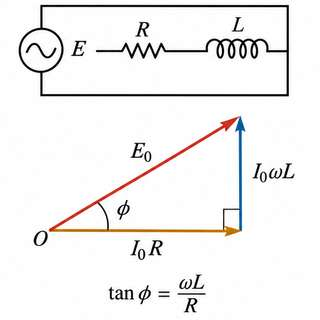
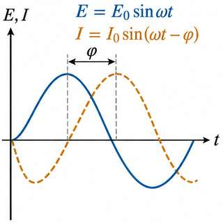
5. (v) Capacitance and resistance in series
Let $E = E_0e^{j\omega t}$ be applied to $R$ and $C$ in series (Fig. 13.12). Let $I$ be the current and $q$ the charge on $C$. Then
The impedance is $Z = R + 1/(j\omega C) = R - j/(\omega C)$. Writing $Z$ in polar form and taking $\theta = \tan^{-1}\left[(1/\omega C)/R\right]$,
The current leads the applied voltage by $\theta$ (Fig. 13.13). The actual current is $I = I_0\sin(\omega t+\theta)$.
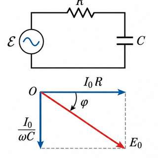
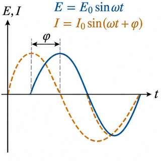
6. The j operator as a rotation
$j=\sqrt{-1}$ turns a phasor through $90^\circ$ anticlockwise. $-j$ turns it $90^\circ$ clockwise. In a circuit, $E_L$ lies $90^\circ$ ahead of $I$ and $E_C$ lies $90^\circ$ behind it. Hence the total emf of a circuit with $R$, $L$ and $C$ is $E = E_R + jE_L - jE_C$ (Fig. 13.20). A complex impedance $Z = R + jX$ has resistance $R$ and effective reactance $X = X_L - X_C$.
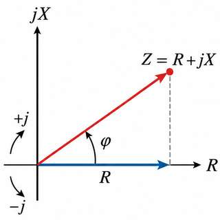
13.2 (vi), 13.3 and 13.4 Parallel and series resonance
Before you start
- The impedance and phase of R, L and C in series (Section 4 of these notes).
- Complex numbers, the conjugate and the modulus (pre-math B1, B3).
1. Parallel resonant circuit (§13.2(vi))
Take an inductance $L$ and a capacitance $C$ in parallel across an alternating emf $E = E_0\sin\omega t$. The current in $L$ lags the emf by $\pi/2$, so $I_L = (E_0/\omega L)\sin(\omega t-\pi/2)$. The current in $C$ leads the emf by $\pi/2$, so $I_C = E_0/(1/\omega C)\sin(\omega t+\pi/2)$ (Fig. 13.14). The total current is
If at a frequency $\nu_0$ we have $\omega C = 1/\omega L$, the current is zero. The circuit then offers an infinite impedance: it is a parallel resonant circuit. Its resonant frequency is


2. Series LCR circuit: first method (§13.3)
Let $E=E_0\sin\omega t$ be applied to $R$, $L$ and $C$ in series (Fig. 13.16). Let $I$ be the current and $Q$ the charge on $C$. The emf equation is $L\,dI/dt + RI + Q/C = E_0\sin\omega t$. Differentiating with respect to $t$ gives
Try the solution $I = I_0\sin(\omega t-\phi)$, with $I_0$ and $\phi$ constants. Substituting $I$, $dI/dt$ and $d^2I/dt^2$ and equating the coefficients of $\sin(\omega t-\phi)$ and $\cos(\omega t-\phi)$ gives
Dividing and squaring-and-adding give
The quantity $\sqrt{R^2+(\omega L-1/\omega C)^2}$ is the impedance $Z$, which is $\sqrt{R^2+(X_L-X_C)^2}$. The current lags the emf if $X_L>X_C$, leads it if $X_L\lt X_C$, and is in phase when $X_L=X_C$.
3. Series resonance
The impedance is least when $\omega L = 1/\omega C$, so $Z=R$ and the current is largest. This frequency is the resonant frequency $\nu_0 = 1/(2\pi\sqrt{LC})$. The largest current is $I_0=E_0/R$. The sharpness of the peak depends on $R$: small $R$ gives a sharp peak (Figs. 13.17, 13.18). The circuit is an acceptor circuit, because it admits the current of its own frequency most readily.


4. Voltage magnification and the Q-factor
At resonance $I_0 = E_0/R$, and the voltage across $L$ is $V_L = X_L I_0 = (\omega_0 L/R)E_0 = QE_0$, where $Q = \omega_0 L/R$ is the quality factor. Thus the voltage across $L$ (and across $C$) is $Q$ times the applied voltage. This is the voltage magnification. It does not increase the power, because the reactive power is wattless. A larger $Q$ gives a sharper, narrower resonance curve (Fig. 13.18). The sharpness is measured by the bandwidth.


5. Vector diagram
In a series circuit the current is the same through $R$, $L$ and $C$. The drop $E_R = I_0R$ is in phase with the current, $E_L = \omega LI_0$ is $90^\circ$ ahead of it, and $E_C = I_0/\omega C$ is $90^\circ$ behind it (Fig. 13.19). The resultant of $E_L$ and $E_C$ is $E_L - E_C$, and $E_0^2 = E_R^2 + (E_L-E_C)^2$.
6. Series LCR circuit: second method (complex impedance)
Write $Z = Z_R + Z_L + Z_C = R + j(\omega L - 1/\omega C)$ (Fig. 13.21). With $E=E_0e^{j\omega t}$,
The actual current is the imaginary part of the complex current. The current lags the voltage by $\phi$.
7. Parallel resonant circuit: the rejector (§13.4)
Let $C$ be in parallel with the series combination of $R$ and $L$, across $E = E_0 e^{j\omega t}$ (Fig. 13.22). The impedance of the $L$ branch is $Z_1 = R + j\omega L$ and of the $C$ branch is $Z_2 = 1/(j\omega C)$. Their parallel combination has
The admittance is least, and so the impedance greatest, at $\omega_0 = \sqrt{\frac{1}{LC} - \frac{R^2}{L^2}}$. If $R$ is small, $\nu_0 = 1/(2\pi\sqrt{LC})$. At this frequency the impedance is $Z = L/(RC)$ and the current is least. A parallel circuit at resonance is a rejector: it blocks the current of its natural frequency (Fig. 13.23). In a parallel circuit, resonance gives maximum impedance; in a series circuit, minimum.

8. Worked examples
§13.3, Example 1 (printed p. 344). $R=50+2=52\ \Omega$, $L=0.3$ H, $C=40\ \mu$F, $\omega=100\pi$, $E_{rms}=200$ V. $X_L=94.2\ \Omega$, $X_C=79.6\ \Omega$, $Z=53.97\ \Omega$, $I_{rms}=3.71$ A. $\tan\phi = 0.28$, $\phi\approx15^\circ39'$, $\cos\phi=0.964$, apparent power $742$ VA, true power $716$ W.
§13.3, Example 2 (printed p. 344). For resonance with $L=5$ H and $\omega=100\pi$, $C=2\ \mu$F. The current at resonance is $I_{rms}=100/100=1.0$ A. The p.d. across $R$ is 100 V, across $L$ 1570 V, and across $C$ 1570 V, which are equal and opposite in phase.
§13.4, Example 1 (printed p. 347). $L=2$ mH, $R=15\ \Omega$, $C=0.001\ \mu$F. The resonant frequency is $\nu_0 = 112\,590$ Hz (or $112\,596$ Hz by the approximation). The peak make-up current is $E_0CR/L = 15\times10^{-6}$ A.
13.5 Power in an AC circuit with resistance, inductance and capacitance
Before you start
- Power in a DC circuit, $P = VI = I^2R$ (pre-physics P8).
- Products of sinusoids and the average of $\cos^2$ over a cycle (pre-math M5, M7).
- Phase angle $\phi$ between current and emf (Section 4 and 5 of these notes).
1. Instantaneous power
Let the voltage and current be $E = E_0\sin\omega t$ and $I = I_0\sin(\omega t-\phi)$, where $\phi$ is the phase difference. Both vary with time, so the power $EI$ is calculated at each instant and then averaged over a cycle. Using $\sin A\sin B = \tfrac12[\cos(A-B)-\cos(A+B)]$,
2. Average power
Averaging over one complete period $T$, the $\cos(2\omega t - \phi)$ term integrates to zero, and
Since $E_{rms} = E_0/\sqrt2$ and $I_{rms} = I_0/\sqrt2$,
The product $E_{rms}I_{rms}$ is the apparent power. The factor $\cos\phi$ is the power factor. The true power is the apparent power times the power factor. The power factor is the ratio of the true power to the apparent power. For a circuit of $R$, $L$ and $C$ in series,
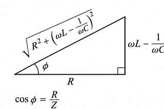
3. Special cases
- Purely resistive: $\phi=0$, $\cos\phi=1$, and the true power is $E_{v}I_{v}$.
- Purely inductive: $\phi=90^\circ$, $\cos\phi=0$; the true power is zero.
- Purely capacitive: $\phi=-90^\circ$, $\cos\phi=0$; the true power is zero.
- $R$ and $L$ in series: $\cos\phi = R/\sqrt{R^2+(\omega L)^2}$.
- $R$ and $C$ in series: $\cos\phi = R/\sqrt{R^2 + 1/(\omega C)^2}$.
4. Wattless current
The current is wattless when the average power is zero. In a purely inductive or purely capacitive circuit with no resistance, $\phi=\pi/2$ and $\cos\phi=0$. The current does no useful work; it is the idle current. This is the principle of the choke coil, which offers reactance to the current but absorbs no power. Splitting the current into components along and perpendicular to the emf (Fig. 13.25), the component $I\cos\phi$ gives the power, and $I\sin\phi$ is wattless.
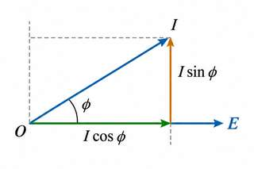
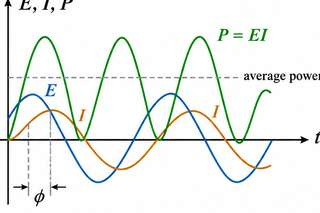
5. Worked examples
Example 1 (printed p. 348). A choke of inductance 5 H and resistance 200 $\Omega$ is connected to 10 V at 100 Hz. $\cos\phi = 200/\sqrt{200^2+(2\pi\cdot100\cdot5)^2} = 0.062$. The power absorbed is $0.00189$ W.
Example 2 (printed pp. 348–349). A 50 V r.m.s. source feeds an air-cored coil. At 50 Hz the power is 100 W and at 100 Hz it is 50 W. The power is dissipated only in $R$: $\frac{50^2}{R^2+(100\pi)^2L^2}R = 100$ and $\frac{50^2R}{R^2+(200\pi)^2L^2}=50$. Eliminating gives $R^2 = 2\times10^4\pi^2L^2$, so $R=100\sqrt2\,\pi L$, and then $R=16.7\ \Omega$, $L=37.3$ mH.
Example 3 (printed pp. 350–351). A coil of inductance 0.7 H in series with 50 $\Omega$ is connected to 200 V at 50 Hz. $Z = 225.6\ \Omega$, $I_{rms}=0.89$ A. The power component is $I\cos\phi = 0.20$ A and the wattless component is $I\sin\phi = 0.87$ A.
Example 4 (printed p. 351). A coil of 0.1 H and 12 $\Omega$ on 220 V, 50 Hz: $X_L=31.43\ \Omega$, $Z=33.6\ \Omega$, and the wattmeter reading is $(220)^2/33.6\times 12/33.6 = 514.5$ W.
Example 5 (printed p. 351). A purely inductive circuit dissipates no power. The energy drawn from the source in one part of the cycle to build the magnetic field is returned to the source in the next part. The inductance stores energy and gives it back; only the resistance of the coil loses energy as heat.
6. Choke coil (§13.6, heading only)
The choke coil is an inductance used to control current without power loss. Its section begins on printed p. 351 and continues beyond this module. It is not included in these notes.